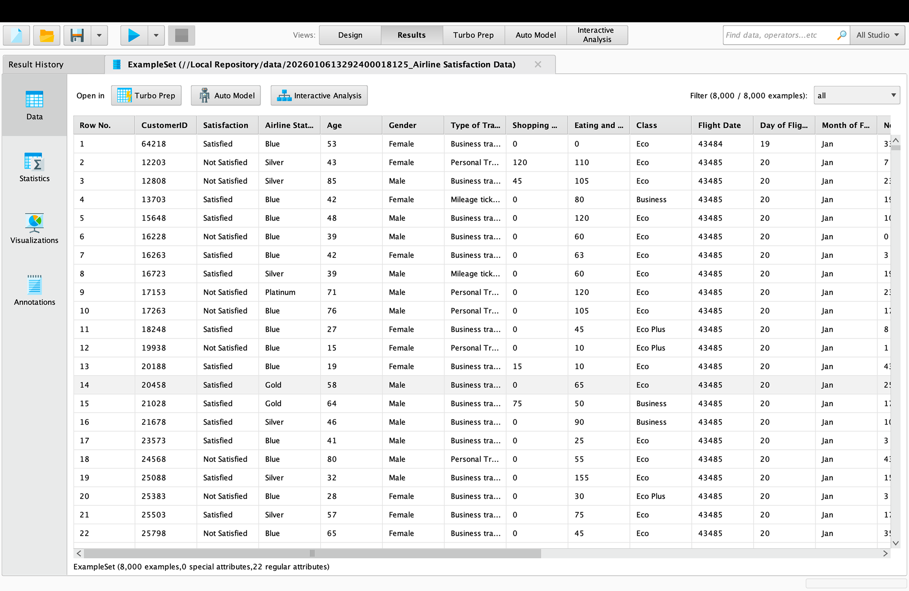
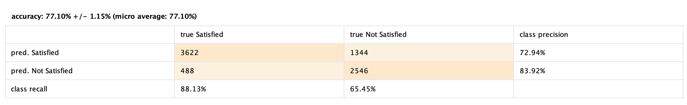

Airline Customer Satisfaction
Prediction (Neural Network)
Description :
The airline industry has experienced consistent growth in passenger numbers over the years, indicating a strong and increasing demand for air travel.
However, despite this growth, customer satisfaction remains relatively low, with an American Customer Satisfaction Index (ACSI) score of 74 out of 100. This places the airline industry below sectors such as hotels, video streaming services, banking, and apparel. This gap highlights a key challenge: while more customers are using airline services, their overall experience may not fully meet expectations. Since customer satisfaction plays a crucial role in building loyalty and increasing customer lifetime value, airlines are increasingly focusing on understanding customer needs and improving the overall travel experience.
Dataset
8000 rows of data
Result :


This neural network analysis aims to predict airline customer satisfaction using 8,000 data points, with variables such as Age, Arrival Delay, Departure Delay, Flight Time, and Type of Travel. The model achieved an accuracy of 77.10%, indicating a fairly strong performance in predicting customer satisfaction. It performs better in identifying satisfied customers (recall: 88.13%) compared to dissatisfied customers (recall: 65.45%), although predictions for dissatisfied customers are more precise. The most influential factors affecting customer satisfaction are Age, Arrival Delay, and Type of Travel. Older customers tend to be less satisfied, while flight delays significantly contribute to dissatisfaction. Additionally, customer expectations differ between personal and business travel.
Strategy Recommendations:
- Improve on-time performance by minimizing flight delays and providing compensation when delays occur.
- Provide special assistance and priority services for older passengers to enhance their travel experience.
- Develop tailored loyalty programs based on travel type (business vs. personal).
- Strengthen proactive customer service to identify and support potentially dissatisfied customers early (e.g., via email, SMS, or calls).